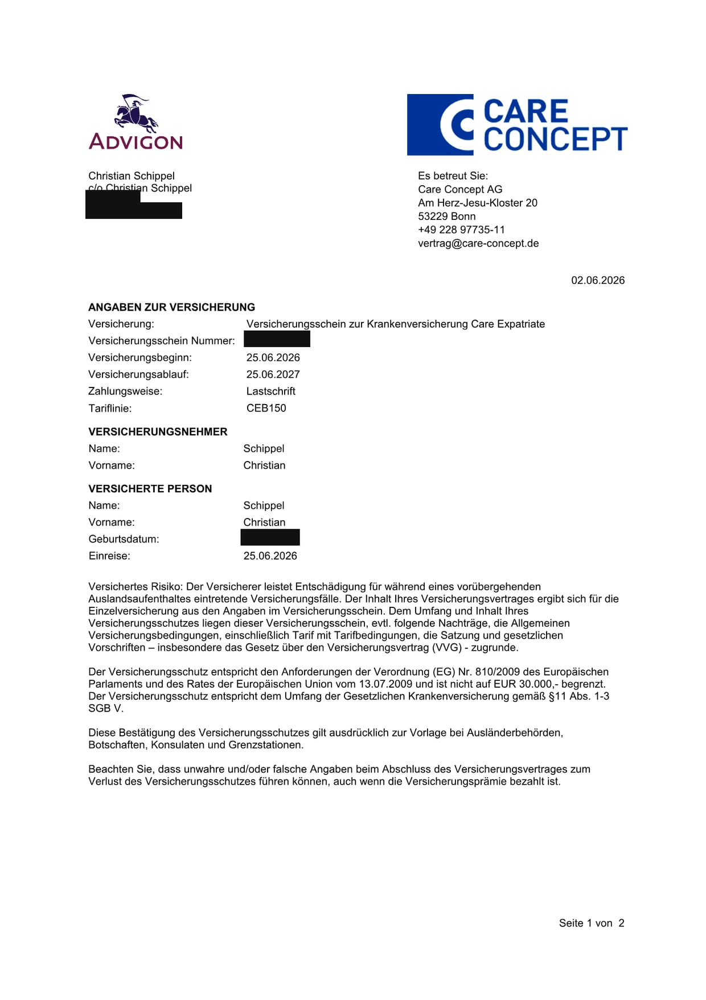

This article contains recommendation links, marked with an asterisk (*). If you take out a policy through one of these links, we may receive a small commission. The price stays the same for you. We only recommend what we have chosen ourselves or checked thoroughly. Which provider is right for you depends on your nationality, your visa and your situation. Honesty comes before commission.
We are moving to Australia in the summer of 2026, as a family of four. One of the questions that occupied us the longest was not the visa, it was health insurance. Because in Australia that is not a detail. In a serious case it can decide a great deal of money. Australia has a good health system, but as a newcomer you do not automatically fall into it. Depending on your visa, completely different rules apply.
This article is both things: an honest field report on which policy I took out for our entry, and an overview of the routes for everyone who is travelling a different path than we are. People on a tourist visa, on a work visa, on a permanent visa, and students. This is not insurance, legal or migration advice. It is our research and our experience, and for the hard facts we link the official sources. One more thing up front: because we are German, our own choice is a German-market product. Wherever that matters, we point to the international providers that do the same job for readers from other countries.
- Your starting point depends on your nationality. Australia has Reciprocal Health Care Agreements with eleven countries; if yours is not one of them, there is no access to public Medicare without a permanent visa.
- Even with an agreement, you still need private cover. It only covers medically necessary care and does not satisfy the insurance condition on work or student visas.
- For the tourist phase we chose Care Expatriate Basic. For me alone 58 euros a month, for the whole family on the same plan around 244 euros (as of June 2026). For non-German readers, SafetyWing or Genki do the same job.
- On the 482 work visa, Australian OVHC is mandatory (visa condition 8501). Only with the permanent 186 visa does Medicare follow.
- Students need OSHC, a separate compulsory cover for the 500 visa.
- Before you de-register at home, check how to keep the door open to your home-country health system for a later return.
First check: does your country have a health care agreement?
This is the point many people overlook, and it is the most important one. Australia has a so-called Reciprocal Health Care Agreement (RHCA) with eleven countries. It gives visitors from those countries limited access to public Medicare for medically necessary treatment. According to Services Australia, those countries are the United Kingdom, the Republic of Ireland, New Zealand, the Netherlands, Belgium, Finland, Italy, Malta, Norway, Slovenia and Sweden.
If your country is not on that list, for example Germany (our case), the United States or most of Asia and Africa, then there is no shortcut. You are fully reliant on private cover until you reach a permanent visa.
But here is the part that matters even if your country is on the list: the agreement only covers care that is medically necessary while you are a visitor, it does not cover everything, and crucially it does not satisfy the health insurance requirement attached to most visas. The Australian Department of Home Affairs is clear that anyone without sufficient cover pays the full cost of treatment. So the conclusion is the same for everyone moving over, with or without an agreement: you need real private health cover. The agreement only changes the nuance, not the bottom line.
Our way: tourist first, then switch
So you can place our recommendations, here is our situation in short. We enter on a tourist visa, the free eVisitor 651, which is available to passport holders from a set list of mostly European countries (other nationalities use the paid Visitor 600 instead). I fly out alone on 23 June, Lucy and the kids follow on 26 July. The plan is to find a sponsoring employer onshore and then apply for the permanent 186 visa. How exactly that works, we describe in our article on the eVisitor 651 tourist visa.
For insurance that means one thing: we know from the start that we will have to switch. Tourist phase, then hopefully work visa, then permanent. Each of these stages has its own insurance logic. So we did not just grab the first policy on offer, we researched what actually fits each stage. That paid off, because the plans and the obligations differ a lot from stage to stage.
And one honest word in advance: our tourist route is a deliberate bet, not a safe standard. Anyone on a different visa or a different timeline often needs different cover than we do. So this is not only our choice, it is also what applies to the other routes.
Phase 1, entering on a tourist visa: what we chose and what fits you
For the tourist phase we chose a German expat health insurance, Care Expatriate from Care Concept. I took it out for myself first, because I fly ahead alone. My confirmation of coverage shows the rate CEB150, meaning Care Expatriate Basic with a 150 euro annual excess, and a premium of 58 euros a month. My policy runs from 25 June 2026 to 25 June 2027, so I went straight for a one-year policy.

Why this plan? Care Expatriate is explicitly built for emigrants, long-term travellers and expats, it is affordable, and the risk carrier behind it is solid: Care Concept is the broker, the insurer is Advigon Versicherung AG, based in Vaduz, part of the HanseMerkur group. For the whole family, two adults and two children, the same Basic plan comes to around 244 euros a month (region worldwide excluding the USA, Canada and Mexico). Important for our plan: the minimum term of this Basic plan is three months, after that the policy can be cancelled with one month's notice. That is exactly what I intend to do once my tourist visa ends and I switch to a work visa, because then I will need an Australian OVHC anyway.
An honest caveat for international readers: Care Expatriate is genuinely a German-market product. Its own terms require permanent residency in Germany, Austria, the EU, the Schengen area, Switzerland or Liechtenstein, and the legally binding contract is the German one. So for us it is a great fit, but if you are not based in Europe it is probably not your route.
If you are moving from elsewhere, the products that do the same job and work without a home residence are the international expat and long-stay travel insurers. The two that fit the entry and transition phase best, because you can sign up while already travelling and you are covered in Australia, are SafetyWing and Genki. We would lead with SafetyWing*, because its Nomad Insurance is designed exactly for people on the move, with no requirement to keep a home residence. Genki is an equally honest alternative, with a Traveler plan for the transition and a Native plan for settling in long-term, and you can sign up without a mailing address. We do not earn anything from the Genki link, we name it because it genuinely fits.
We may receive a commission if you take out a policy via the SafetyWing link, at no extra cost to you. We do not represent SafetyWing, and this is not a recommendation to buy a specific policy. Always check the cover against your own situation.
- Emigrants explicitly covered. Some classic travel or long-stay travel plans exclude people who intend to emigrate permanently. We deliberately chose a plan that includes emigrants. Check this point in the terms before you sign.
- No home-residence trap. A pure travel policy is usually tied to a residence in your home country and will not cover the country you actually live in. Once you de-register at home, that becomes a problem. Make sure your cover works for someone who has moved away for good.
- No low coverage cap. Our confirmation states that cover is not capped at 30,000 euros. For Australian hospital costs that matters.
- Clear term and renewal. Because our timeline is uncertain, a policy with a clear term and a renewal option was worth a lot to us.
Just visiting? Then travel insurance is enough
What we deliberately did not take is a pure travel policy of the kind sold for holidays, as our main cover. Providers like World Nomads, for example, require your residence to be in a specific country and do not cover treatment in your country of residence. For an emigrating family that is the wrong product class. If you are really only travelling or backpacking through Australia for a few weeks or months, though, this product class is made exactly for that. A well-known option for it is World Nomads*.
We receive a fee when you get a quote from World Nomads using this link. We do not represent World Nomads. This is not a recommendation to buy travel insurance.
The difference to our case is intent. A holiday policy assumes you will return home and is tied to that. Whoever emigrates needs an emigrant plan. Many people miss this one distinction, and in a claim it can cost you the entire cover. Just make sure that any travel policy genuinely includes Australia, with a high enough coverage limit and medically necessary repatriation.
Phase 2, work visa 482: OVHC is mandatory
As soon as you hold a temporary work visa, currently the Skills in Demand visa 482, the obligation changes. This visa carries condition 8501. It requires you to hold adequate health insurance for the entire time in Australia. In practice that means an Australian OVHC, an Overseas Visitors Health Cover. Without that proof you do not meet the visa condition.
OVHC is available from several Australian insurers, among them Allianz Care Australia, Bupa, Medibank, nib and ahm. The plans are tiered, from a pure hospital variant up to packages with doctor, specialist and medication. The providers do not publish family prices openly, those run through an individual quote. Plan roughly for several hundred Australian dollars a month for a family, and get two or three quotes directly from the providers before you switch, not through comparison portals with a commission logic.
One detail worth knowing: Australian insurers may apply a waiting period of up to twelve months for pre-existing conditions, and likewise for pregnancy and birth. This is set out by the Department of Home Affairs. We are all healthy and without pre-existing conditions, so it does not affect us as long as we declare it honestly. Anyone with pre-existing conditions should plan for these waiting periods.
Phase 3, permanent residency: Medicare
With the permanent 186 visa, everything changes for the better. Permanent residents have access to Medicare, the public health system. That removes the largest part of doctor and hospital costs, and the expensive private full cover becomes an optional extra, if you want extras like dental or a private room.
This is exactly where the whole point of the route lies for us: from the tourist visa through the work visa to permanent residency, and with it eventually into Medicare. Until then we carry the private cover ourselves.
An honest limitation: what applies during the transition phase, when the tourist visa runs out and a bridging visa kicks in, is complicated and depends on the individual case. A temporary 482 work visa does not bring Medicare, which is why OVHC is required there. Whether Medicare is exceptionally possible during a bridging phase depends on the specific case and visa history. This is exactly the point where we do not guess, we ask our migration agent. More on that decision in our guide to the 186 visa for families.
Students: OSHC is mandatory
A separate route, and one I know first hand: the student visa. Anyone on an Australian student visa 500 needs an OSHC, an Overseas Student Health Cover. It is mandatory, for students and for their accompanying family, meaning partners and children under 18. The official government site Study Australia sets this out.
I had OSHC myself, during my chef apprenticeship at Envirotech in Byron Bay, from 2017 to the end of 2018. Taking it out was a requirement back then just to be allowed to start the apprenticeship. What I can honestly say: applying for it was simple and quick. What I cannot say is how good the cover was in a real emergency, because in all that time I never needed it. And a note, because it matters: my experience is from 2017 and 2018, today's prices and rules may be different. The facts below are the current state.
The compulsory minimum cover of an OSHC, according to Study Australia, generally includes doctor visits, part of the hospital treatment, ambulance transport and limited medication. What it does not cover: dental, optical and physiotherapy. For those there are extras plans or private supplementary cover. Only a few approved insurers may offer OSHC: ahm, Allianz Care Australia (Peoplecare), Bupa, CBHS International Health, Medibank and nib. This is listed on the government site privatehealth.gov.au. For students from countries without a health care agreement, the same applies as for us: no Medicare, so the OSHC is compulsory.
Do not forget your home country
One thing that easily slips through, because it happens on the other side of the world: your home-country health system. When you emigrate permanently and de-register your residence, your public cover at home normally ends. The problem only shows up on a possible return. Without preparation, you may not simply be able to step back into your old system.
The fix depends on your country, so check it early. In our case, German statutory insurance offers what is called an entitlement insurance (Anwartschaft). With it you keep the right to re-enter the statutory system on a return to Germany. At the insurer TK this costs around 82.62 euros a month per member in 2026, and benefits are paused during that time, which is exactly why you need the separate overseas cover in parallel. Two points we noted: with a permanent residence abroad, family members have to insure themselves separately, so the entitlement applies per adult member, and the application belongs before you de-register, otherwise a gap opens up. If you are from another country, the mechanism will have a different name and different rules, so confirm yours with your own insurer before you leave.
Pitfalls that get expensive
A few things that are often missing from the standard explanations and can cost real money in a serious case.
The ambulance in New South Wales. Ambulance transport in NSW is not automatically covered by Medicare or by every policy. A separate ambulance cover is cheap, while a callout without cover quickly runs into four figures. We check the specific terms directly with the provider before we rely on it, because the amounts change.
Waiting periods for pre-existing conditions. As described above, up to twelve months with Australian insurers. Anyone with an existing condition should factor that in and must never hide it.
Honest declarations. Our own confirmation of coverage states it explicitly: untrue or inaccurate statements at sign-up can lead to a loss of cover, even if the premium has been paid. That holds for German and for Australian policies alike. When in doubt, ask one question too many rather than dress up a detail.
Transition gaps. The most dangerous moment is the switch between two phases. When the tourist visa ends and the next visa is not yet in place, no insurance gap may open up. That is why we chose a policy with a clear term and a renewal option, rather than cancelling on a hope.
Where we stand and next steps
As of today I have taken out my Care Expatriate for the entry. As soon as Lucy and the kids follow, the family cover is added. We will sort out the German entitlement insurance with our insurer before we de-register. And as soon as we take the next visa step, from the tourist visa towards a work visa and permanent residency, we switch into the appropriate Australian cover.
How these insurance costs fit into our overall budget, we have broken down in our cost guide for families. That article shows what moving to Australia as a family costs in total.
We deliberately write here only what we have actually decided and lived through. How Care Expatriate performs in real daily life, at the first doctor's visit in Australia, we will add once we have experienced it. The same goes for the actual switch into OVHC when it is due. So this article grows along with our move.
Frequently asked questions
Do you need health insurance as a tourist in Australia?
On the eVisitor 651 it is not formally compulsory, but in practice it is essential. Whether your home country has a Reciprocal Health Care Agreement with Australia changes the detail, but even an agreement only covers medically necessary care and does not meet the insurance condition on work or student visas. Without private cover, any treatment hits you at full price, because Australia's Medicare is not open to most visitors.
What does tourist-phase health insurance for Australia cost?
We chose Care Expatriate Basic with a 150 euro excess. For me alone that is 58 euros a month, for the whole family of two adults and two children the same plan is around 244 euros a month (region worldwide excluding the USA, Canada and Mexico, as of June 2026). Care Expatriate is a German-market product, so for non-German readers international providers such as SafetyWing or Genki do the same job at their own prices. Always get a quote for your own case.
What is the difference between OVHC and OSHC in Australia?
OVHC (Overseas Visitors Health Cover) is for temporary visas such as the 482 work visa, where it satisfies visa condition 8501. OSHC (Overseas Student Health Cover) is mandatory for the student visa 500 and covers students plus their accompanying family. Both cover doctor and hospital care, but they are different products for different visas.
What happens to your home health insurance when you move to Australia?
When you de-register and move permanently, your home-country public cover usually ends. Check early whether your country lets you preserve the right to re-enter its system later. In our case, German statutory insurance offers an entitlement insurance (Anwartschaft); at the insurer TK that costs around 82.62 euros a month per adult in 2026, with benefits paused while you are abroad. Other countries have different rules, so confirm yours before you de-register.
When do you get Medicare in Australia?
Medicare, the public health system, is normally available once you hold a permanent visa such as the 186. On a tourist visa or a temporary 482 work visa there is no Medicare access, so private cover is required. If your home country has a Reciprocal Health Care Agreement, you may get limited access to medically necessary care as a visitor, but that does not replace the cover your visa requires.
Status: June 2026. I fly out alone on 23 June, Lucy follows with the kids on 26 July. As soon as we have experienced the first doctor contact or the switch into Australian cover, we will add it to this article.
Last updated: 16.06.2026 · Sources: Services Australia, Reciprocal Health Care Agreements, Home Affairs, Adequate health insurance, Study Australia, OSHC, privatehealth.gov.au, OSHC providers, TK, entitlement insurance. Care Expatriate figures come from our own confirmation of coverage and the provider's premium table (as of June 2026).